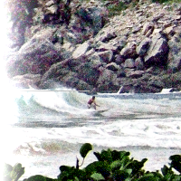

Spatio Temporal Retinex-like Envelope with Stochastic Sampling
Spatio Temporal Retinex-like Envelope with Stochastic Sampling
Radius
Neighborhood taken into account, for enhancement ideal values are close to the longest side of the image, increasing this increases the runtime
name: radius
type: int
default: 300
minimum: 2
maximum: 6000
ui-minimum: 2
ui-maximum: 1000
ui-gamma: 1.60
ui-step-small: 1
ui-step-big: 100
unit:pixel-distance
Samples
Number of samples to do per iteration looking for the range of colors
name: samples
type: int
default: 5
minimum: 2
maximum: 500
ui-minimum: 3
ui-maximum: 17
ui-gamma: 1.00
ui-step-small: 1
ui-step-big: 5
Iterations
Number of iterations, a higher number of iterations provides a less noisy rendering at a computational cost
name: iterations
type: int
default: 5
minimum: 1
maximum: 1000
ui-minimum: 1
ui-maximum: 30
ui-gamma: 1.00
ui-step-small: 1
ui-step-big: 5
pads: input output
parent-class: GeglOperationAreaFilter
categories: enhance tonemapping
source: operations/common/stress.c
 This page is part of the online GEGL Documentation, GEGL is a data flow based image processing library/framework, made to fuel GIMPs high-bit depth non-destructive editing future.
This page is part of the online GEGL Documentation, GEGL is a data flow based image processing library/framework, made to fuel GIMPs high-bit depth non-destructive editing future.